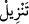

da uygun düşmektedir. Aynı şekilde ateşin Hâlid b. Sinan’ın kıssasında ateşin ona boyun
eğdirilmesi ile ona gönderilen meleğin durumu arasında da bir uygunluk vardır.
Kitabu’t-Ta‘rîf ve Es’iletü’l-hikem’de böyle geçmektedir.
Onları buna ehil kılan sıfatları sebebiyle “kullarından” vahyi kendilerine indirmeyi
“dilediği kimselere”
“vahiy ile” âyette istiâre yoluyla “er-rûh” kelimesi ile vahiy kasdedilmektedir ki
Kur’an da o cümledendir. Çünkü vahiy, cehâlet sebebiyle ölü olan kalblere hayat verir
ya da rûhun ceseddeki görevini dinde yerine getirir. Yâni ‘ruh’ vahiyden istiâre-i
tahkîkıyyedir. Vahye ‘ruh’ denilmesi bu iki yönden biri sebebiyledir.
Kâşifî der ki: Tibyân’da denilir ki hiçbir melek Cebrâil (a.s.) olmadan aşağı inmez.
İnsanları hafaza meleklerinin gözettiği gibi Cebrâil de o meleği gözetir.”
“Benden başka ilah olmadığına” her şeyi yaratan ve rızık veren Ben’den başka
ibâdete müstahak kimse olmadığına “dair (kullarımı) uyarın” yâni, Allah melekleri ‘bu
söz ile uyarın’ diye gönderir. Bu sözün muhâtabları, kendilerine melekler gönderilen
nebîlerdir. Bu emri veren ise Allah’tır. Melekler ise onun taşıyıcılarıdır. Yâni, ey
peygamberler insanlara bunu bildirin.
Allah’ın sakındırılması gereken bir şeyi bildirmesi, bizzat o şeyin zâtı sebebiyle
değil, uyarılan kimselerin ortak koşmak gibi ona zıt bir vasıf taşımaları sebebiyledir. Bu
da Müfti Sa‘dî’nin de Hâşiye’sinde belirttiği gibi, bildirmenin, uyarma ve korkutma
(inzâr) şeklinde olması için yeterlidir. Onların “Benden başka ilah yoktur.” ile
korkutulması, Allah Teâlâ’nın yüce zâtına yakışmayan ortaklar koşmaları sebebiyledir.
Onların, ulûhiyyetin yegâne sâhibi olan Allah’a hakîkatin hilâfına şeyler isnad etmeleri
sebebiyledir ki Allah onlardan intikam almaktadır.
“ve benden korkun.” Benden başkasına ibâdet eylemeyin “diye gönderir.”
Bana kulluk eyle ki hâkim Benim
Sen kullarımdansın, Mevlâ Benim
Âyetin delâlet ettiğine göre melekler, Allah’ın kitablarını ve mesajlarını iletmek
hususunda Allah ile onun rasûl ve nebîleri arasındaki vâsıtalardır. Onlar vahyi bazı nebî
ve rasûllere bir defada indirirler. Tevrat’ın Musâ’ya, İncil’in Îsâ’ya ve Zebur’un
Dâvud’a indirilişi böyledir. İbn Kesir ve Ebû Amr’ın “__WORD__ yünzilü” şeklindeki
kırâatleri de buna işâret eder. Bazılarına ise maslahatlara göre ve hâdiselere uygun
olarak parça parça ve dağınık olarak indirirler. Nitekim Kur’an’ı yirmi veya yirmi üç
senede parça parça indirdiler. “__WORD__ Yünezzilü” şeklindeki diğer kırâatler de buna delâlet
eder. Çünkü “__WORD__ tenzîl”de tedricîlik ve çokluk anlamı vardır. Hem tedrîcîlik ve bir
defada inme anlamlarını ihtivâ eden “__WORD__ inzâl” daha kapsamlıdır. Vahyin nüzûlünün bir
defada veya tedrîcen olması da ancak Allah’ın emir ve murâdına bağlıdır.
Nübüvvet de Allah’ın dilediği kullarına has kıldığı bir mevhibesi ve rahmetidir.
Nübüvvetin esas gâyesi, peygamberlerin Allah Teâlâ’nın birliğini (tevhîd) ve emredip
yasakladığı tüm hususlarda ondan sakınmayı (takvâ) insanlara bildirmeleridir.